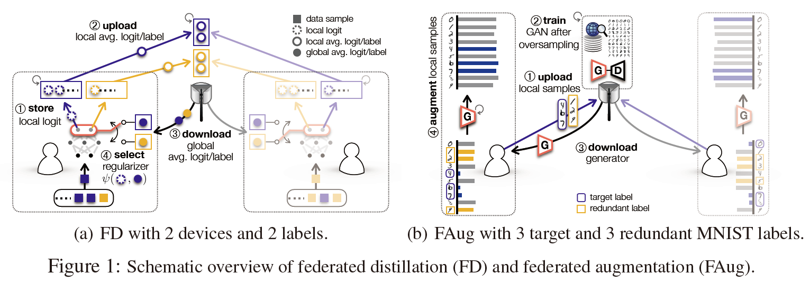
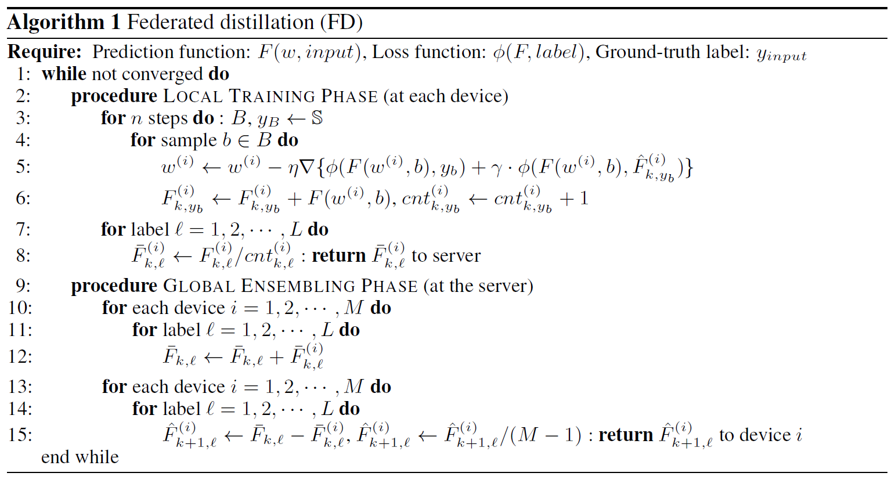

Communication-Efficient On-Device Machine Learning: Federated Distillation and Augmentation under Non-IID Private Data
本文最后更新于：2021年8月7日 晚上
arXiv 2018
为了使得联邦学习能够有效被应用，需要降低联邦学习的通讯开销。为此，论文作者提出了Federated Distillation，是的训练的通讯开销远小于传统的FL，尤其是当模型参数量巨大的时候。此外，用户的数据通常是non-IID的，为此，论文作者提出了Federated Augmentation，每个设备共同训练一个生成模型，从而增强其本地数据以生成IID数据集。
联邦学习受限于两个问题：
- 通讯开销
- non-IID问题
non-IID问题可以通过用户间交换一些数据来解决，但是这会带来额外的通讯开销和隐私泄露问题。为此，论文作者寻求一种在non-IID数据场景下的通讯开销较低的on-device ML方法。论文作者提出了一种在线知识蒸馏方法（Federated Distillation）来解决通讯开销问题，该方法的通讯开销和模型大小无关，仅和模型输出的维度有关。在进行Federated Distillation之前，通过联合增强 (FAug) 纠正non-IID训练数据集，这是一种使用生成对抗网络 (GAN) 的数据增强方案，该方案在隐私泄漏和通信开销之间的权衡下进行集体训练。训练后的 GAN 使每个设备能够在本地再现所有设备的数据样本，从而使训练数据集是IID的。

Federated Distillation
FD来自Knowledge Distillation的一种在线版本，称为co-distillation（CD）。在CD中，每个设备是一个学生，并且将所有其他设备的输出的平均值视为teacher输出。使用交叉熵定期测量师生输出差异，该交叉熵成为学生的损失正则化器，称为蒸馏正则化器，从而在分布式训练过程中获得其他设备的知识。
FD将每个客户端上每个类别的logit vector做平均处理，记为第个客户端上第轮迭代的第类别的logit vector，对于样本，对其输出做如下处理：
其中$cnt$是记录当前类别样本数量的变量，最后每个类别的logit vector在做平均处理，发送到服务器
服务器收到所有的local logit vector之后，对所有的local logit vector求和
每个device收到的是其余device的平均值，即global logit vector
每个device收到$\hat{F}_{k+1,y_b}^{(i)}$之后，可以用于监督其对于第$l$类样本的学习

Federated Augmentation
为了解决各个device数据的non-IID问题
- device发送部分数据到服务器
- 服务器通过Internet搜集相似的数据来扩充这些数据，从而训练一个GAN
- 将GAN发送给各个device以扩充数据
本博客所有文章除特别声明外，均采用 CC BY-SA 4.0 协议 ，转载请注明出处！